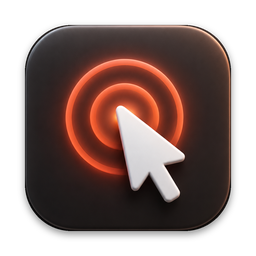

Clickcast
Cursor highlight, click rings and keystrokes for your Mac
Clickcast shows people where you click and what you press. It highlights your pointer, draws a ring at every click, and shows your keyboard shortcuts on screen, for screen recordings, lessons, tutorials and live demos. It lives in the menu bar.
Support
Questions, bugs or ideas: email admin@stackedboost.com. You get an answer from the developer, usually within two working days.
Common questions
- Why does Clickcast need Input Monitoring?
- Only to show your keystrokes on screen. Each key appears for a moment and is then forgotten: Clickcast never stores, logs or sends what you type. The pointer highlight and click rings work without it.
- I allowed Input Monitoring but no keys show.
- Open System Settings, Privacy & Security, Input Monitoring, and check that Clickcast is on. If macOS asks, choose Quit & Reopen. In the Clickcast menu, check that Keystrokes is on. By default only shortcuts show (keys pressed with ⌘, ⌃ or ⌥, plus keys like ⏎ and the arrows); choose "Every key" in Settings to show all typing.
- Will my audience see it in a recording?
- Yes. Clickcast draws on top of everything, on every screen and Space and over full-screen apps, so QuickTime, OBS, Zoom screen sharing and other recorders capture it.
- Can I move the keystroke display?
- Yes. Open Settings, choose Move on Screen, drag the keys where you want them, then press Done.
- What are the keyboard shortcuts?
- ⌃⌥P switches the pointer highlight, ⌃⌥K the keystrokes, and ⌃⌥S the spotlight, so you can change things mid-demo without leaving the app you are showing.
- What is in Clickcast Pro?
- The pointer highlight is free. Clickcast Pro adds click rings with a colour per mouse button, the keystroke display in three styles, and the spotlight. One payment, no subscription.
- How do I restore Clickcast Pro on another Mac?
- Click Get Pro in the Clickcast menu, then Restore Purchase, with the same Apple Account you bought it with.